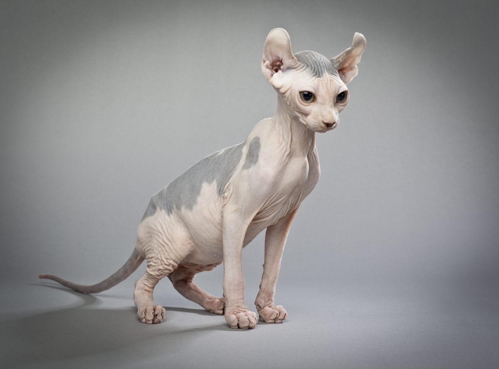
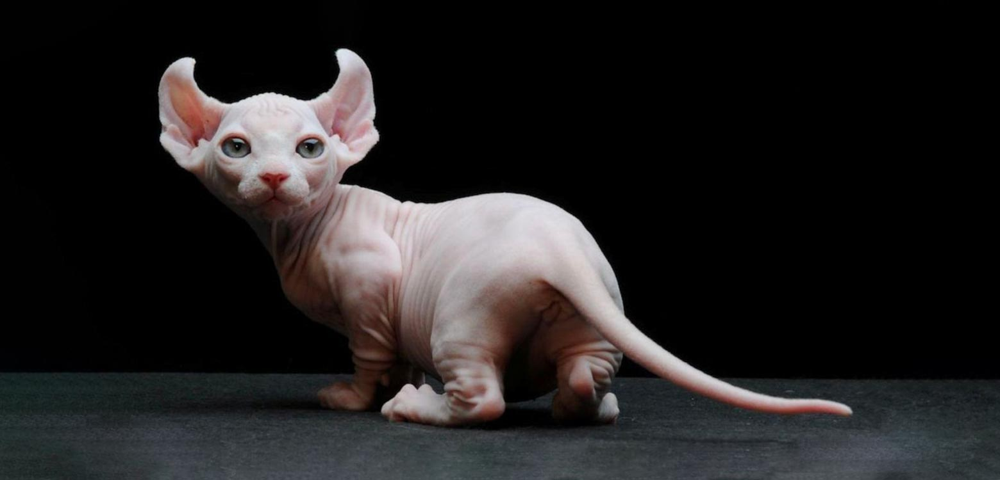

História do Gato Elfo
Uma mistura entre o gato sphynx e o gato curl americano, O gato elfo é um felino originário dos Estados Unidos. Por ser uma criação recente e não ser numeroso ao redor do mundo, é bastante raro, o primeiro da raça tendo nascido no ano de 2007. Atualmente estes gatos estão sendo introduzidos nos salões da Associação Internacional Felina (TICA), mas ainda não foram reconhecidos como raça pela World Cat Federation (WCF).
Características físicas do Gato Elfo
O gato elfo é um felino de porte médio, pesando entre 3,5 e 7 kg. O aspecto mais característico de sua aparência física é, sem dúvida, sua falta de pelo e suas grandes orelhas curvadas para trás. O corpo do gato elfo é muito semelhante ao do esfinge, sendo semi-linear e bem construído. Possui cauda longa e fina. Olhos grandes e rasgados. Cernelha em torno de 30 cm. A cor dos olhos pode variar em uma paleta diversificada. O gato elfo é extremamente inteligente, curioso, travesso, inteligente. Gosta muito da companhia humana; não necessita de longos peŕiodos de descanso como outras raças.
Cuidados extras com a raça
O gato elfo é um felino forte e saudável com expectativa de vida de até 15 anos e sem doenças genéticas ou hereditárias. Cabe destacar que são sensíveis às otites ou inflamações do canal auditivo devido à morfologia de suas orelhas, sendo a higiene e seu controle extremamente importantes para a prevenção destas patologias. Também estão suscetíveis a problemas cutâneos como a dermatite devido à exposição direta da sua pele frente a qualquer agente ou temperatura ambiental. Para manter um bom estado de saúde, os gatos elfos requerem uma série de check-ups veterinários para poder diagnosticar e tratar qualquer enfermidade que possa acometê-los, bem como recorrer a uma medicina preventiva adequada por meio de vacinações, desparasitações e esterilização.
